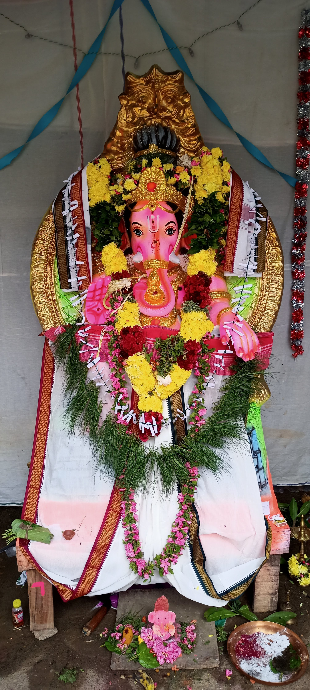

விநாயகர் சதுர்த்தி விழா - 2022
2022 இல் விநாயகர் சதுர்த்தி விழா மிகவும் சிறப்பாக நடைபெற்றது. மக்கள் திரளாக பங்கேற்று ஆனந்தமாக விழாவை கொண்டாடினர்.
2022 இல் விநாயகர் சதுர்த்தி விழா மிகவும் சிறப்பாக நடைபெற்றது. மக்கள் திரளாக பங்கேற்று ஆனந்தமாக விழாவை கொண்டாடினர்.